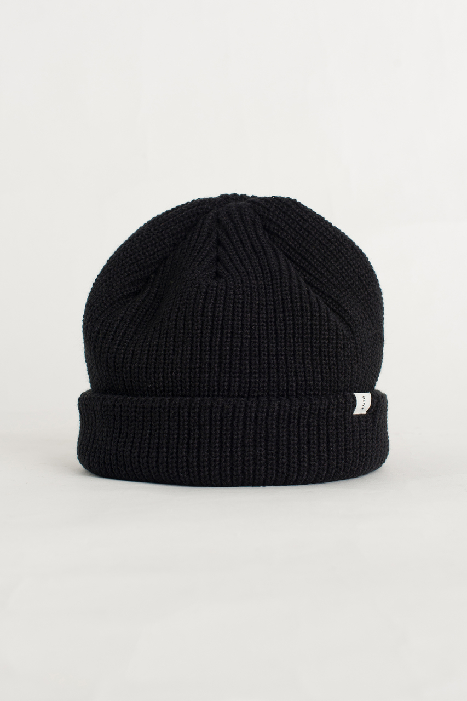

Winter is just around the corner and nobody likes to be out in the cold without something to keep their head warm. If you’re on the search for a beanie, most likely you’ll have a hard time finding them in materials other than wool. Olive Clothing has added beanies to their Fall/Winter collection and they are vegan! Made of 100% acrylic, you’ll be just as warm as in a wool beanie, but can be at ease knowing an animal wasn’t harmed in the making of it.
Shop Now My problem with beanies is that they always have too much material; they either cover too much of my face, or slouch too much at the top. I like Olive’s fisherman beanie in particular because of its size. It sits comfortably on top of your head, allowing a snug and comfortable fit without completely covering your ears. At only $25, this beanie is a great investment for those cold winter months.